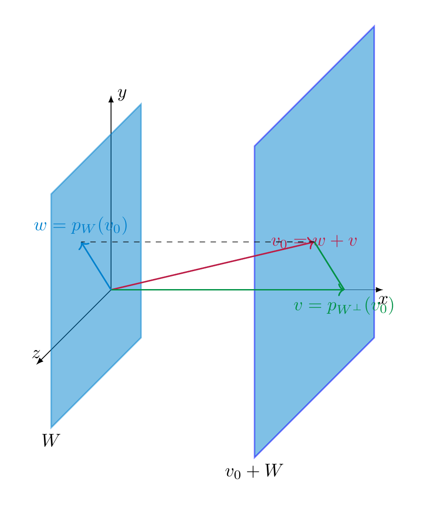

Affine subspaces¶
Definition 7.40
Let \(V\) be a vector space. An affine subspace of \(V\) is a subset of the form
for an appropriate vector \(v \in V\) and a subspace \(W \subset V\).
In other words, an affine subspace is obtained by translating a subspace (i.e., a sub-vector space) by a certain vector. For example, any line or a plane in \({\bf R}^3\) that is not necessarily passing through the origin is an affine subspace.
Affine planes in \(\bf R^3\)
A key example of an affine subspace is the solution set of a (not necessarily homogeneous) linear system
Indeed, by Theorem 4.37 its solution set is precisely an affine subspace. See also the illustration in Remark 4.38.
Lemma 7.41
Let \(X = v + W \subset {\bf R}^n\) be an affine subspace. If \(X = v' + W'\) for any vector \(v' \in {\bf R}^n\) and a subspace \(W' \subset {\bf R}^n\), then the following holds:
-
\(W = W'\) and
-
\(v - v' \in W\).
In other words, the sub-vector space \(W\) is uniquely determined by \(X\).
Proof. If \(v + W = v' + W'\), then \(v-v' \in W\). This implies
Here we have used that for a subspace \(A \subset {\bf R}^n\) (such as \(A=W\)), and an element \(a \in A\), we have \(a + A = A\). ◻
We can therefore define the dimension of an affine subspace as \(\dim X = \dim W\), if \(X = v + W\) as above.
Definition 7.42 (Related exercises: Exercise 7.13, Exercise 7.8, Exercise 7.14)
Let \(X\), \(X'\) be two affine subspaces. Let \(W, W' \subset {\bf R}^n\) be the associated sub-vector spaces, as per Lemma 7.41.
-
We say \(X\) intersects \(X'\) if \(X \cap X' \ne \emptyset\).
-
We say \(X\) is parallel to \(X'\) if \(W \subset W'\) or if \(W' \subset W\).
-
We say that \(X\) is skew to \(X'\) if \(W \cap W' = \{0\}\) and if \(X \cap X' = \emptyset\).
Example 7.43
We examine the relative position of the lines
The two subspaces \(W\) and \(W'\) are spanned by \((1,-1,2)\) and \((-1,1,2)\), respectively. These two vectors are linearly independent, so that the lines are not parallel. We determine whether they have an intersection point by solving the system
Considering the first two equations gives \(s+t=3\) and \(s+t=0\), which has no solution. Thus \(X \cap X' = \emptyset\), which means that the lines are skew.
A plane and a line in \(\bf R^3\)
Two lines in \(\bf R^3\)
Definition 7.44
For two affine subspaces \(X, X' \subset {\bf R}^n\) we say that two points \(x \in X\), \(x' \in X'\) realize the minimal distance of \(X\) and \(X'\) if
for any two points \(x_1 \in X, x'_1 \in X'\). In this event, we also write \(d(X, X') := d(x, x')\) for that minimal distance.
Proposition 7.45 (Related exercises: Exercise 7.7, Exercise 7.9)
Let \(X = v_0 + W\) be an affine subspace of a Euclidean space \(V\). There is a unique vector \(v \in V\) characterized by the following equivalent properties:
-
\(v\) is an element of \(X \cap W^\bot\),
-
\(v\) realizes the minimal distance of the origin to \(W\).
This vector \(v\) is given by
i.e., the projection of \(v_0\) onto the orthogonal complement \(W^\bot\).
Proof. We first prove that \(X \cap W^\bot\) contains \(v\) as defined above. Indeed, by Theorem 7.24, we can write
with uniquely determined \(w = p_W(v_0) \in W\) and \(v = p_{W^\bot}(v) \in W^\bot\). This means that \(v = v_0 - w \in X \cap W^\bot\).
We now prove that \(X \cap W^\bot\) consists only of that vector \(v\). If another vector \(v' \in W^\bot \cap X\), then \(v' = v_0 + \tilde w\) for \(\tilde w \in W\), so that \(v - v' = w - \tilde w \in W \cap W^\bot = \{0\}\), so that \(v = v'\).
We prove that this vector \(v\) realizes the minimal distance to the origin. To this end, let \(x \in X\) be any vector. We need to prove \(|\hspace{-0.5mm}| {x} |\hspace{-0.5mm}| \ge |\hspace{-0.5mm}| {w} |\hspace{-0.5mm}|\). Then \(w := v-x \in W\). We can then compute
Here is a picture of the proof idea:

We finally show that a vector \(x \in X\) with minimal distance to the origin agrees with \(v\):
Since \(|\hspace{-0.5mm}| {x} |\hspace{-0.5mm}| = |\hspace{-0.5mm}| {v} |\hspace{-0.5mm}|\), this implies \(|\hspace{-0.5mm}| {w} |\hspace{-0.5mm}|^2 = 0\), i.e., \(w = 0\), i.e., \(x = v\). ◻
Distance of a point to a line in \(\bf R^2\)
Definition 7.46
A hyperplane in \({\bf R}^n\) is an affine subspace \(H\) of dimension \(n-1\), i.e., an affine subspace of the form
where \(W\) is a subspace with \(\dim W = n-1\).
For example, a line is a hyperplane in \({\bf R}^2\), and a plane is a hyperplane in \({\bf R}^3\).
Proposition 7.47 (Related exercises: Exercise 7.10)
Let \(a = \left ( \begin{array}{c} a_1 \\ \vdots \\ a_n \end{array} \right ) \in {\bf R}^n\) be a non-zero (column) vector, and let \(b \in {\bf R}\). Then the subset
is a hyperplane. Its distance to the origin is given by
Proof. We show that \(H\) is a hyperplane. Indeed, the equation \({\left \langle x, a \right \rangle} = b\), which can be rewritten as
is a (non-homogeneous) linear system and the matrix \(\left ( \begin{array}{ccc} a_1 & \dots & a_n \end{array} \right )\) has rank 1, since the vector is nonzero. Therefore \(H\) has dimension \(n-1\).
Let \(W := \{ x \in {\bf R}^n \ | {\left \langle x, a \right \rangle} = 0\}\) be the associated subspace. Then \(H = v + W\) for some \(v \in {\bf R}^n\), according to Theorem 4.37. Thus, \(a \in W^\bot\). If we set \(\lambda := \frac b {|\hspace{-0.5mm}| {a} |\hspace{-0.5mm}|^2}\), we have \(\lambda a\in H\):
Therefore \(\lambda a \in H \cap W^\bot\). Thus, by Proposition 7.45, \(\lambda a\) is the closest vector (in \(H\)) to the origin, and we have
◻
Above we saw that an equation of the form
for fixed \(a \ne 0\) and \(b \in {\bf R}\) determines a hyperplane. Here is a converse to this statement.
Proposition 7.48 (Related exercises: Exercise 7.14)
(Hesse normal form of a hyperplane) Let \(H = v_0 + W \subset {\bf R}^n\) be a hyperplane, and let \(d = d(0, H)\) be its distance to the origin. Then there is a unique vector \(a \in {\bf R}^n\) such that
-
\(|\hspace{-0.5mm}| {a} |\hspace{-0.5mm}| = 1\),
-
\(a \in H^\bot\),
-
\(H = \{ x \in {\bf R}^n \ | \ {\left \langle x, a \right \rangle} = d\}\).
This vector can be computed as
where \(v\) is the unique element in \(H \cap W^\bot\) or (equivalently) the point in \(H\) that is closest to the origin.
The equation \({\left \langle x, a \right \rangle} = d\) (which is a linear equation in the unknowns \(x_1, \dots, x_n\)) is called the Cartesian equation of the hyperplane.
Example 7.49
We continue the example in Example 7.22:
and consider the hyperplane \(H = \left ( \begin{array}{c} 11 \\ 11 \\ 11 \end{array} \right ) + W\). We compute \(H \cap W^\bot\), which by Proposition 7.45 requires to find \(w \in W\) and \(v \in W^\bot\) such that
We compute the inverse of \(A = \left ( \begin{array}{ccc} 1 & 1 & 4 \\ 2 & 1 & -4 \\ 4 & 0 & 1 \end{array} \right )\) using Theorem 4.81 (alternatively, one can also use the adjugate matrix, as in Theorem 5.15). The result is
According to Theorem 4.69, the above system therefore has a unique solution, given by
Thus, \(c = \frac 13\) above, so that
According to Proposition 7.45, this is the closest vector in \(H\) to the origin, and the distance of \(H\) to the origin is given by
In addition,
Lower dimensional affine subspaces¶
This representation of hyperplanes can also be used to understand the geometry of subspaces of smaller dimension. For simplicity, we discuss this in the special case of lines in \({\bf R}^3\). A line \(L \subset {\bf R}^3\) can be described in two ways.
Definition 7.50
A line \(L\) can be described as an affine subspace
(7.51)
for appropriate vectors \(v, w \in {\bf R}^3\). I.e., the points in \(L\) are of the form \(v + \lambda w\) for \(\lambda \in {\bf R}\). This can be spelled out for each of the three components:
(7.52)
This system is referred to as the system of vector equations or parametric equations. The vector \(w\) is referred to as the direction vector of the line.
Definition 7.53
A line \(L\) can also be described by a system of two equations
(7.54)
This system is referred to as the system of cartesian equations of \(L\). If we write \(x = \left ( \begin{array}{c} x_1 \\ x_2 \\ x_3 \end{array} \right )\) etc., it can be rewritten more compactly as
Each of these two equations describes a hyperplane in \({\bf R}^3\), i.e., a plane, and the line is the intersection of these planes.
One can pass from Definition 7.50 to Definition 7.53 by eliminating \(\lambda\) in Equation (7.52). Conversely, in order to present \(L\) as an affine subspace, i.e., in the form
we solve the above linear system.
Example 7.55
The following equations
determine a line \(L \subset {\bf R}^3\). We compute a representation \(L = v + W\) by solving the system:
so the solutions are \(y = 1-z\), \(x = 1-y = z\), i.e.,
Example 7.56
The line
is described by the vector equations
The cartesian equations can be determined by observing that \(\lambda = x_2\), so that the other two equations read
which can be rewritten as
or, yet equivalently
The planes \(P\) containing the given line \(L\), i.e. such that \(L \subset P\) can be characterized by the equation
where \(\lambda, \lambda' \in {\bf R}\) are arbitrary such that \(\lambda a + \lambda' a' \ne 0\). Indeed, this equation does describe a (hyper)plane, and if \(x \in L\), then it satisfies this latter equation.
Example 7.57
The line defined by the equations
can be written as \({\left \langle x, \left ( \begin{array}{c} 0 \\ 1 \\ 0 \end{array} \right ) \right \rangle} = 0\) and \({\left \langle x, \left ( \begin{array}{c} 0 \\ 0 \\ 1 \end{array} \right ) \right \rangle} = 1\). (It can also be written as \(\left ( \begin{array}{c} 0 \\ 1 \\ 0 \end{array} \right ) + L(\left ( \begin{array}{c} 1 \\ 0 \\ 0 \end{array} \right ))\).) Thus, the planes \(P\) containing \(L\) are all of the form
for arbitrary \(\lambda, \lambda' \in {\bf R}\). Note that the vectors \(\left ( \begin{array}{c} 0 \\ \lambda \\ \lambda' \end{array} \right )\) are precisely the vectors orthogonal to the vector \(\left ( \begin{array}{c} 1 \\ 0 \\ 0 \end{array} \right )\).
Given another line \(L' = v' + L(w')\), this conveniently allows to determine the plane \(P\) that is parallel to \(L'\). The line \(L'\) is parallel to \(P\) exactly if
for appropriate \(\lambda, \lambda' \in {\bf R}\).
Example 7.58
Continueing the example above, let
It is given by \(L' = \left ( \begin{array}{c} 0 \\ 0 \\ 2 \end{array} \right ) + L(\left ( \begin{array}{c} 1 \\ 1 \\ 0 \end{array} \right ))\). We solve the equation
it gives \(\lambda=0\), and \(\lambda' \ne 0\) is arbitrary. Thus, for any \(\lambda'\), the plane defined by the equation
is parallel to \(L'\) and contains \(L\). This gives the equation
or, more concretely, \(x_3 = 1\).